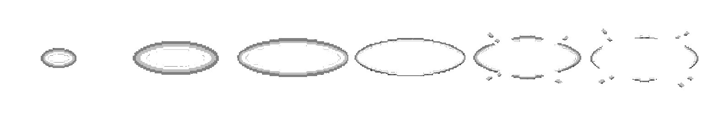
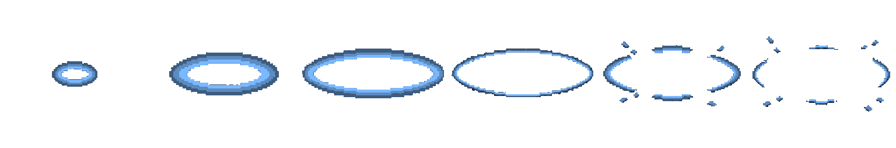
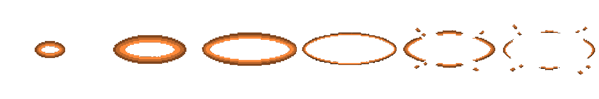
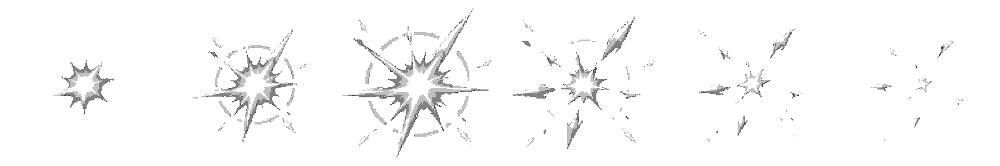
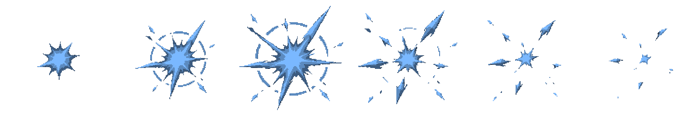
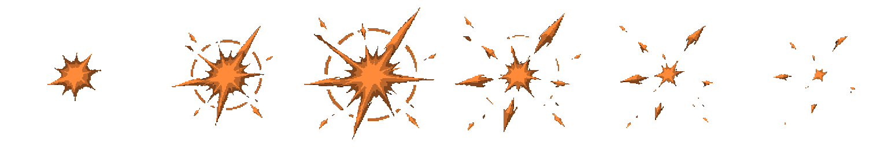
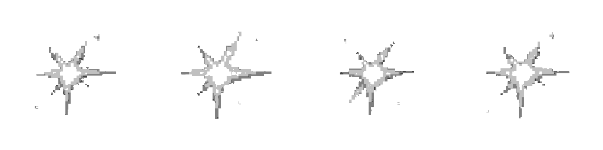
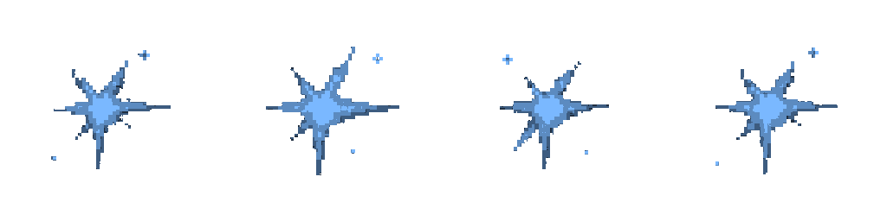
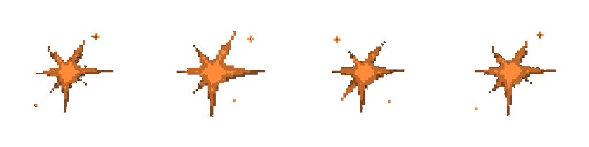

Spell effects · Round 1
ART-SPELL-R1 — three HD VFX candidates for the shared shock ring, big-hit burst, and held light. Every candidate is shown frame-by-frame in white, blue, and orange tints beside the existing effect art it replaces.
Each cell is displayed at 256 px. Existing 128 px atlas frames are doubled with nearest-neighbor sampling so both generations use the same world scale. On a phone, swipe each strip horizontally.
These are unapproved v01 candidates. The game keeps its existing effects until you approve them. The candidate frames below come from the packed HD atlas; the stand-ins come from the current VFX atlas.
Shock ring
Expanding ellipse with an empty center; the last two frames break into arcs and chips.
White tint

Blue tint

Orange tint

Impact burst
Compact core, uneven full-length spikes, then shards and sparks thinning away.
White tint

Blue tint

Orange tint

Held flare
Small centered core with short irregular rays and a few sparkle specks; no halo.
White tint

Blue tint

Orange tint
